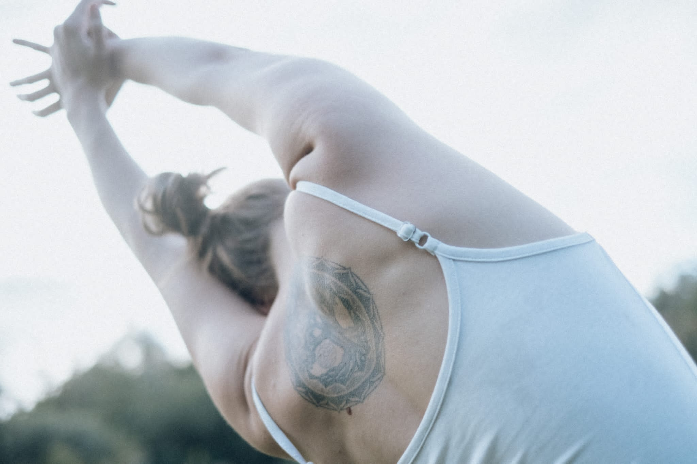

Individueel aanbod
Tijdens een individueel traject gaan we dieper in op de verandervragen waar jij mee zit. Je bepaalt zelf welke balans tussen gespreksbegeleiding (oplossingsgerichte stroming) en lichaamsgerichte methoden (stroming van de somato-psychopedagogie) je wil hanteren. Werk je liefst al zittend of in beweging? Binnen of buiten? In relatie tot jezelf, je omgeving of andere mensen? Mag jouw lichaam worden aangeraakt of niet? Deze belangrijke vragen bespreken we in een gratis, online verkennend gesprek.
